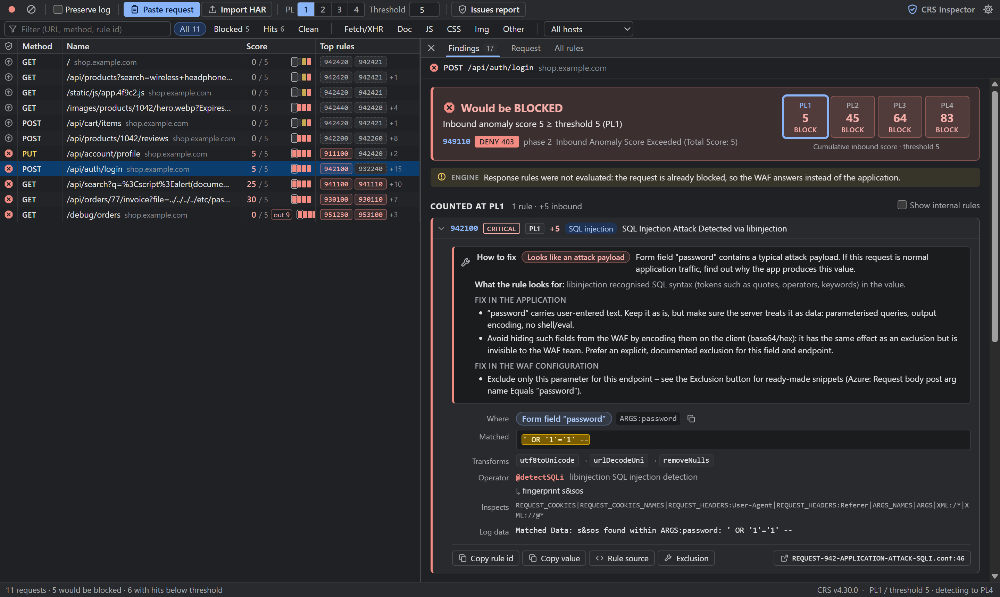
A Web Application Firewall (WAF) such as ModSecurity, Coraza or Azure Application Gateway / Front Door uses the OWASP Core Rule Set (CRS) to block attacks. CRS is generic – legitimate requests (signed URLs, rich text, JSON with special characters, unusual HTTP methods) can trigger it too. This extension runs the real CRS rules against your requests before they hit a WAF, so you see what would be blocked, which rule fires, on which part of the request, and why.
| Feature | What it gives you |
|---|---|
| DevTools tab “OWASP CRS” | Next to Network. Every request of the inspected page is analysed automatically while DevTools is open. |
| Paste a request | Chrome “Copy as PowerShell / cURL / fetch”, “Copy all as …”, raw HTTP or HAR files – analysed instantly. |
| Verdict + paranoia matrix | Blocked / passes at your configured paranoia level, and the score at PL1–PL4 (“would start blocking at PL2”). |
| Rule cards | Rule id with link to its source, the request part (JSON field, query arg, cookie, header, path), the matched text highlighted, decoding steps, the regex / libinjection fingerprint. |
| Exclusion helper | Copy-ready ModSecurity/CRS rule exclusions and an Azure WAF exclusion for false positives – test them immediately in the settings. |
Accuracy. The engine is a JavaScript re-implementation of ModSecurity v2 running the unmodified CRS rule files. It passes 99.9 % of the official CRS regression tests (5162/5166 for v4.30.0). Your production WAF may still differ in version, paranoia level, limits or exclusions – treat the result as “what a standard CRS installation would do”.
The extension is not in the Chrome Web Store; it is loaded “unpacked” from the project folder. This takes about a minute and only needs to be done once.
chrome://extensions into the address bar and press Enter (or menu ⋮ → Extensions → Manage Extensions).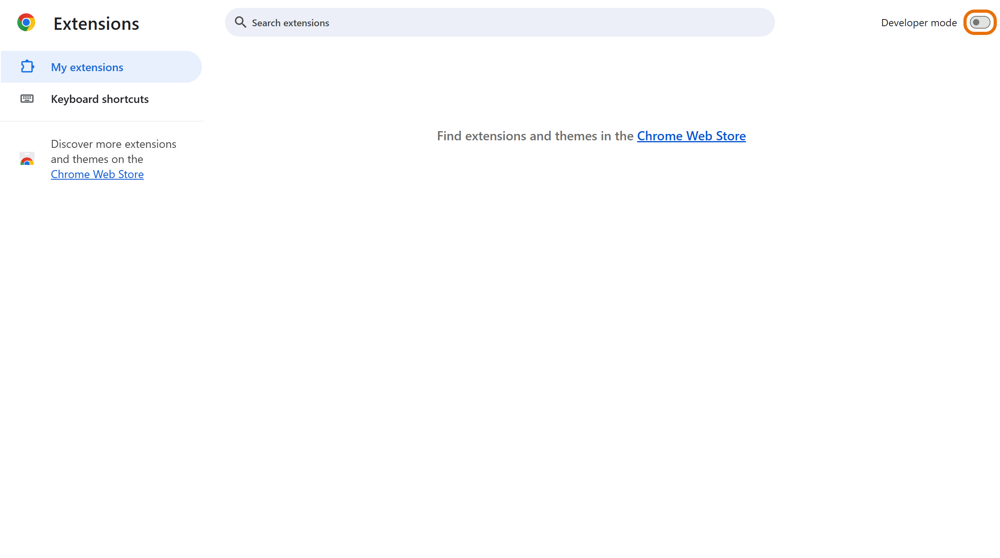
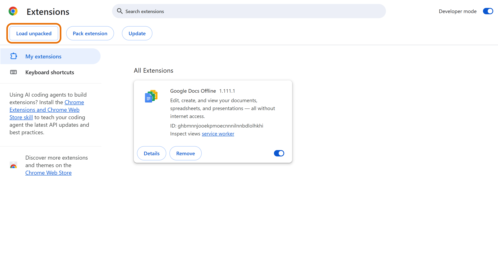
extension folderIn the folder picker, open the project and select the folder named extension (the one that contains manifest.json), e.g.C:\Users\<you>\src\crs-request-inspector\extension, then click Select Folder. Do not select the project root or extension\src.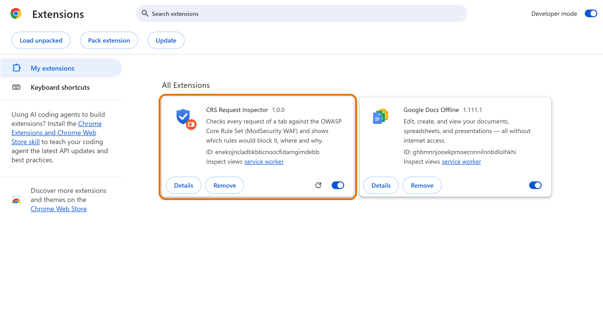
Updating. When the files change (e.g. new rule sets), click ↻ on the extension card, then close and reopen DevTools. Chrome may occasionally show a notice about developer-mode extensions at start-up – choose to keep the extension.
Permissions. The extension only requests storage (for its settings). It reads requests through the DevTools API of the tab you are inspecting and never sends data anywhere.
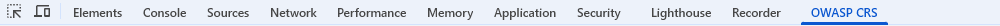
Nothing appears? DevTools must be open before the requests are made – reload the page. The red ● record button in the toolbar must be on. Use Preserve log to keep entries across page navigations.
The toolbar icon opens the same interface in a normal tab (no live capture). Use it to paste requests or import HAR files.
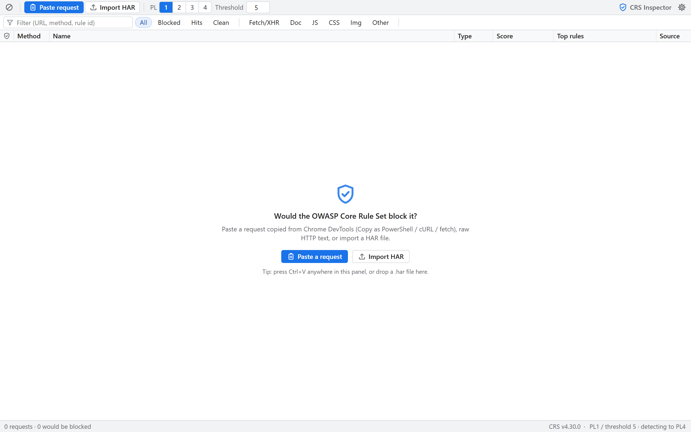
Left: all requests (like the Network tab). Right: the analysis of the selected request.
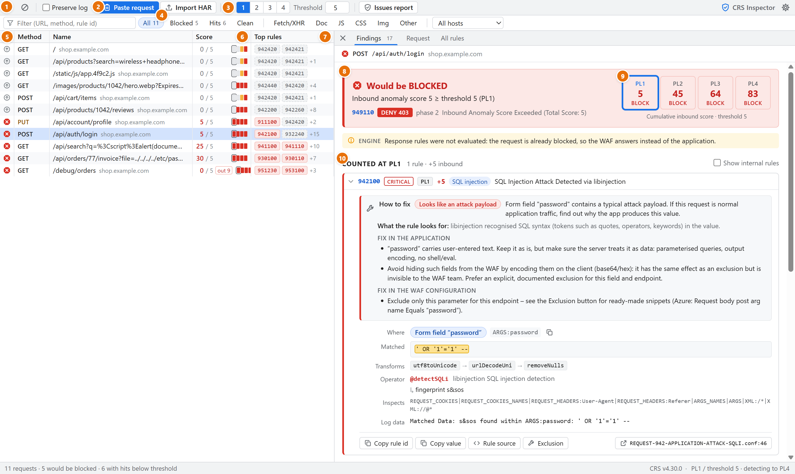
8 / 5 = anomaly score at the selected PL / threshold. The four small boxes are PL1–PL4 (see below).| Icon | Meaning | What to do |
|---|---|---|
| ⊗ red | Would be blocked at the selected PL | Open it, look at the rule cards: real attack pattern, or a false positive to exclude? |
| ⚠ orange | Rules count at the selected PL, but the total stays below the threshold | Passes today, but one more hit in the same request would block it. |
| ⇧ grey | Rules match only at higher PLs | Passes at your PL. Relevant if you plan to raise the paranoia level. |
| ✓ green | Clean – no CRS rule matched up to PL4 | Nothing to do. |
The four boxes in the Score column are PL1, PL2, PL3, PL4 from left to right: red = would be blocked at that level, orange = rules hit but the score stays below the threshold, empty = no hits. The box of the selected PL is outlined. Example: □■■■ means “passes at PL1, blocked from PL2 upwards”.
CRS does not block on a single “bad pattern”. Every matching rule adds points to an anomaly score; the request is blocked when the score reaches the threshold. The paranoia level decides which rules take part.
Every CRS rule belongs to one paranoia level (tag paranoia-level/N). A WAF configured with PLn runs all rules from PL1 up to PLn. Higher levels add stricter rules: more attacks detected, but also many more false positives on normal traffic.
| Level | Strictness | Typical use and false-positive risk |
|---|---|---|
| PL1 | Baseline (default) | Recommended starting point for almost every application. Few false positives; blocks clear attacks (SQL injection, XSS, path traversal, …). Most managed WAF setups run at this level. |
| PL2 | Elevated | Applications with sensitive data. Adds more SQL/XSS/RCE patterns and checks on special characters. False positives are common with free text, rich text, tokens and signed URLs – needs tuning. |
| PL3 | High | Banking / high-security. Counts special characters, very strict protocol checks. Many false positives; requires a dedicated tuning effort. |
| PL4 | Paranoid | Extremely strict (e.g. allows only a very small character set in arguments). Nearly every real application needs extensive exclusions. |
| Rule severity | Points | Effect with the default threshold 5 |
|---|---|---|
| CRITICAL | +5 | One hit is enough to block. |
| ERROR | +4 | Blocks together with any other hit. |
| WARNING | +3 | Needs at least one more hit. |
| NOTICE | +2 | Needs further hits. |
A rule that matches in several places (e.g. two query parameters) adds its points for each match. At the end of the request phase, rule 949110 compares the total with the threshold and denies the request with HTTP 403 (shown as 949110 DENY 403 in the verdict). Responses are scored the same way with the outbound threshold (default 4, rule 959100).
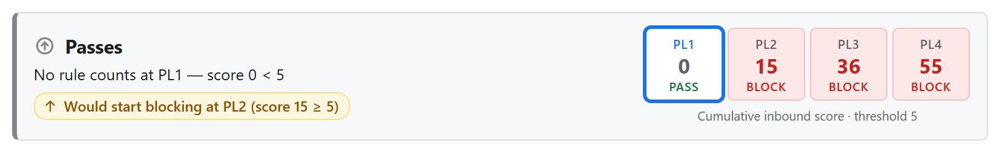
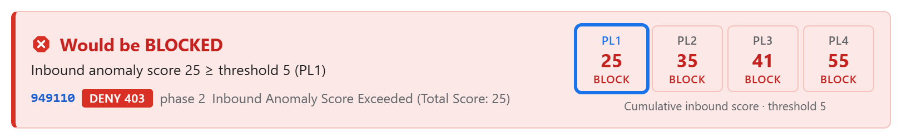
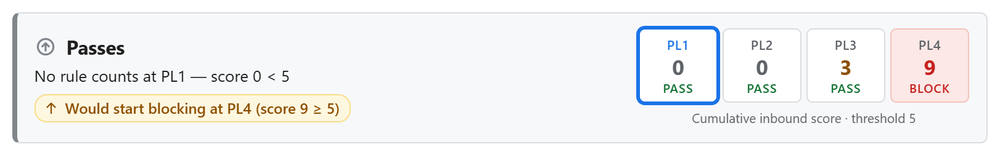
The numbers are cumulative: the PL3 box is the sum of all hits from PL1, PL2 and PL3 – exactly what a WAF configured with PL3 would compute. The toolbar PL buttons choose the blocking level you want to simulate; the extension always also evaluates up to PL4 (detection level, see Settings) so you can see what would happen if you raised it.
Which PL does our WAF use? Ask whoever manages the WAF policy (or check its configuration: tx.blocking_paranoia_level in CRS 4, tx.paranoia_level in CRS 3, the managed rule set and disabled rules in Azure). If unknown, assume PL1 and threshold 5.
Click a rule in the findings list to expand it. Every card starts with a How to fix box (section 7), followed by the technical details. Example: rule 942440 matching a signed image URL.
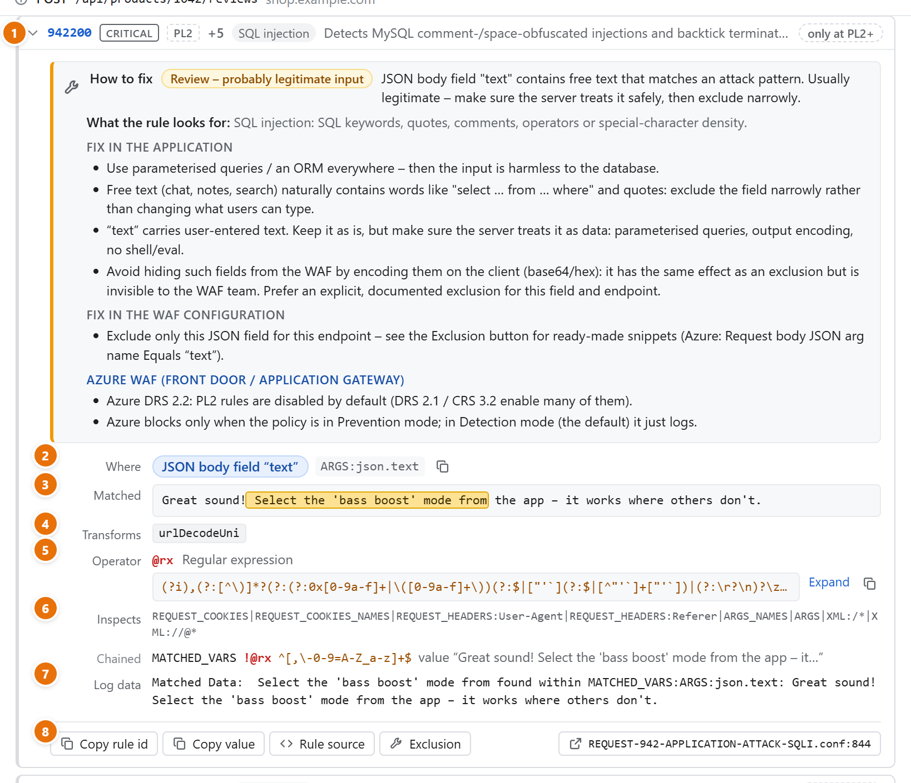
ARGS:Signature) you need for exclusions.@rx regular expression (copyable), @detectSQLi/@detectXSS with the libinjection fingerprint, @pm keyword list, etc.Notes above the findings explain how the request was interpreted – e.g. PARSER “Detected HTTP/2 pseudo-headers …” (Chrome sends HTTP/2; the :authority, :path … headers are not real headers) or a body that could not be parsed as JSON (ModSecurity rejects such requests with rule 200002).
For every finding the extension explains what to change – so developers know whether to fix the website or ask for a WAF exclusion.
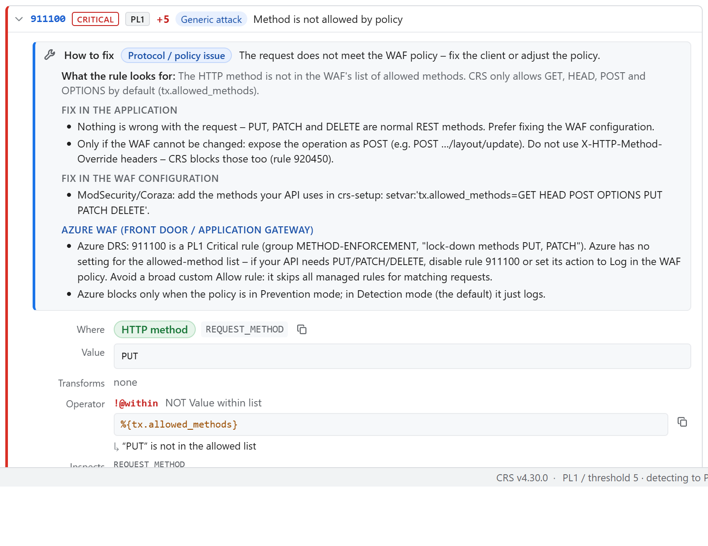
| Assessment | Meaning and typical action |
|---|---|
| Likely false positive | The matched value is random data – a JWT, signature, base64 token, hash or UUID. It only looks like attack syntax. Action: WAF exclusion for that variable (or, if your code generates it, a format without special characters). |
| Review – probably legitimate input | User-entered text or HTML (reviews, comments, search). Usually legitimate. Action: confirm the server handles it safely (parameterised queries, output encoding, no shell/eval), then exclude only that field on that endpoint. |
| Looks like an attack payload | A strong PL1 signature (libinjection SQLi/XSS, path traversal). Action: if this was normal application traffic, find out why the app produces such a value – otherwise the WAF is doing its job. |
| Protocol / policy issue | The request breaks a policy (method, content type, missing header, size limit). Action: fix the client, or adjust the WAF policy (e.g. allowed methods). |
| Information leak | The response shows error details or stack traces. Action: disable detailed errors in production. |
Click Issues report in the toolbar. All findings of the captured requests are grouped by rule + request part with the number of requests, the affected endpoints (ids generalised, e.g. /orders/:id) and the recommendation. Findings that count at your paranoia level come first. Copy as Markdown / Download .md produce a report you can paste into a ticket or pull request.
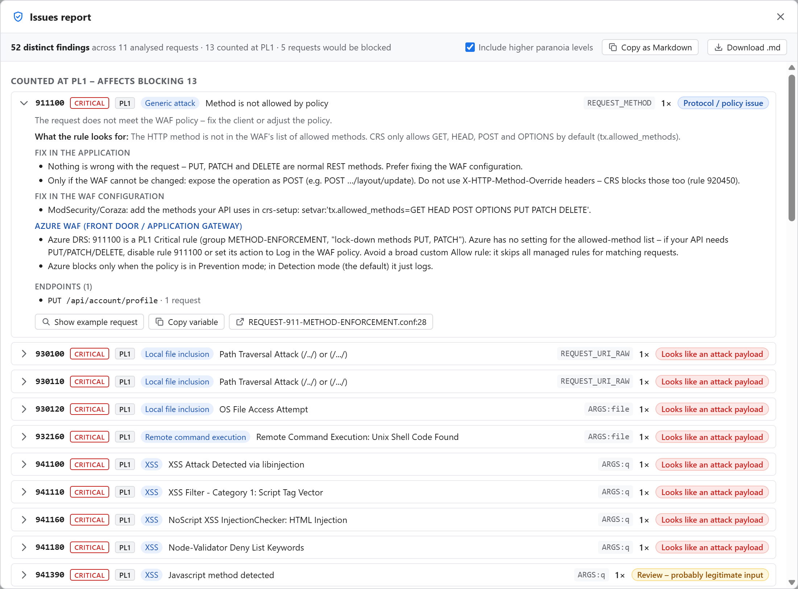
These examples come from the fictitious Example Shop in demo/ (node demo/server.mjs, then open DevTools → OWASP CRS and click Browse normally / Send attack samples). They are typical of what the panel finds on real applications.
Product images are loaded through a CDN with signed URLs, e.g. /images/products/1042/hero.webp?Expires=…&Signature=…&Key-Pair-Id=….
| PL | Score | Why |
|---|---|---|
| PL1 | 0 · pass | No PL1 rule matches – at the default level these requests are fine. |
| PL2 | 5 · block | The Signature value is URL-safe base64 and contains -- and ~. 942440 “SQL Comment Sequence Detected” sees -- (an SQL comment) → +5 = blocked. |
| PL3–4 | 11–28 · block | 942431/942432 count special characters, 920273 rejects characters outside a strict set. |
Conclusion: at PL1 nothing is blocked. If the WAF runs at PL2 or higher, every product image would get a 403 – a classic false positive. The signature is random data, not user input, so it is safe to exclude ARGS:Signature from the SQL-injection rules for the /images/ path.
POST /api/products/1042/reviews sends {"rating":5,"text":"Great sound! Select the 'bass boost' mode from the app – it works where others don't."}. At PL1 it passes; at PL2 rules such as 942200 see SQL-like words and quotes (“Select … from”, ') and the score reaches 15. The text is legitimate, but it is user input: keep it parameterised/escaped in the application and, if you run PL2, exclude only ARGS:json.text on the reviews endpoint.
Almost every request shows hits on 942420 (PL3) and 942421 (PL4) – “Restricted SQL character anomaly detection (cookies)”. The cause is the shop_session cookie: it holds a full JWT whose signature contains many - characters, which these rules count as SQL special characters.
REQUEST_COOKIES:shop_session from 942420/942421.PUT /api/account/profile scores 5 at PL1 because of 911100 “Method is not allowed by policy”: standard CRS allows only GET, HEAD, POST and OPTIONS. This is a WAF policy question, not a bug in the request – see section 10 for why it may not be blocked in your environment.
Some applications encode free text on the client (base64, hex) before sending it. Encoded content passes the WAF because the WAF cannot read it – the same effect as an exclusion, but invisible to whoever operates the WAF. That is acceptable only if the server validates and safely handles the decoded text; an explicit, documented exclusion for that one field on that one endpoint is the more transparent alternative.
Real attack or false positive? Ask: does the matched value come from a user, and could it reach a database, a shell or an HTML page? Random tokens, signatures, hashes and encrypted blobs → false positive. Free text from a form, search box or review → real risk; exclude only narrowly (one field, one endpoint) and make sure the application escapes/parameterises it.
Click Exclusion on a rule card. The helper generates snippets for the matched variable and endpoint – ids, numbers and UUIDs in the path are generalised ([^/]+, [0-9]+).
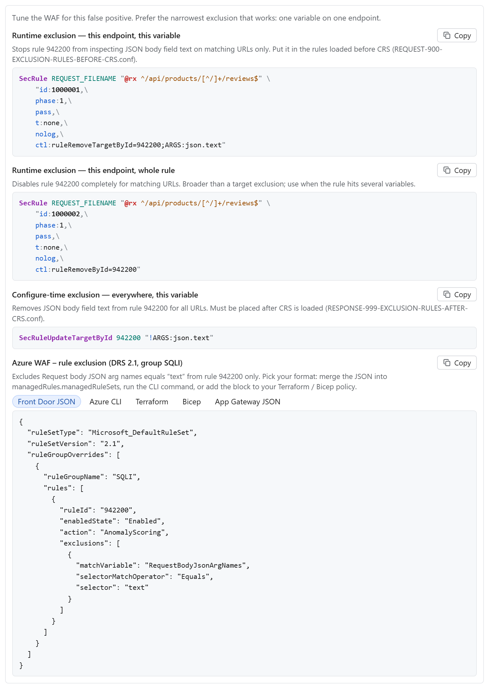
| Snippet | When to use |
|---|---|
| Runtime exclusion — this endpoint, this variable | Preferred. Removes one variable from one rule on matching URLs only. Goes into the rules loaded before CRS. |
| Runtime exclusion — this endpoint, whole rule | When the rule hits many variables on that endpoint. |
| Configure-time — everywhere, this variable | The variable is never dangerous anywhere (e.g. a CSRF token). Goes after CRS. |
| Azure WAF | Exclusion JSON for Application Gateway / Front Door WAF policies (match variable, selector, rule). |
SecRuleUpdateTargetById), click Apply.With the default profile the extension shows what a standard CRS installation in blocking mode would do – load your own policy (section 11) to simulate your actual Azure WAF. If a request it marks as blocked goes through in your environment, the WAF in front of the application is configured differently – or is not enforcing at all.
Look at the response headers in the Network tab: x-azure-ref means the site is served through Azure Front Door; Application Gateway WAF usually leaves no header but answers blocked requests with its own 403 page. Azure WAF policies use Microsoft's Default Rule Set (DRS 2.x – based on CRS 3.3 plus Microsoft rules), not the open-source CRS 4 that the extension uses by default – switch the profile to Azure WAF and import your policy (section 11) for an exact simulation.
| Possible reason | Explanation |
|---|---|
| Policy in Detection mode | Azure enables managed rules in Detection mode by default: matches are only logged, nothing is blocked. Very common in dev/test environments. |
| Front Door Standard tier | Managed rule sets (DRS) are only available on Front Door Premium (and classic). On Standard only custom rules exist – no CRS-style detection at all. |
| No WAF policy on this domain | The WAF policy must be attached to the endpoint / domain through a Front Door security policy. |
| Rule disabled or excluded | 911100 (or another rule) may be disabled, set to Log, covered by an exclusion or by a custom Allow rule. |
| Different rule set | DRS differs from CRS 4: no PL3/PL4 rules, PL2 rules disabled by default in DRS 2.2, some rules replaced by Microsoft rules (e.g. 942440 → 99031002). The How to fix box shows these Azure notes per rule. |
az afd profile show -g <resource-group> --profile-name <profile> --query sku.name
az afd security-policy list -g <resource-group> --profile-name <profile> -o table
az network front-door waf-policy show -g <resource-group> -n <policy> --query "{mode:policySettings.mode, state:policySettings.enabledState, rules:managedRules.managedRuleSets[].{type:ruleSetType, version:ruleSetVersion}}"action_s = Log / Block / AnomalyScoring):
AzureDiagnostics | where Category == "FrontDoorWebApplicationFirewallLog" | where requestUri_s has "/api/account/profile" | project TimeGenerated, ruleName_s, action_s, policyMode_s, details_msg_s, requestUri_s | order by TimeGenerated desc
curl -s -o /dev/null -w "%{http_code}\n" "https://shop.example.com/?crs-test=%3Cscript%3Ealert(1)%3C%2Fscript%3E"The extension supports two WAF profiles: OWASP CRS (ModSecurity, Coraza and other CRS-based WAFs) and Azure WAF policy (Front Door / Application Gateway). Both can import your real configuration.
| Profile | Import formats | What is applied |
|---|---|---|
| OWASP CRS ModSecurity, Coraza, CRS-based WAFs | crs-setup.conf, REQUEST-900 / RESPONSE-999 exclusion files, any SecRule/SecAction files (Settings → Import ModSecurity / Coraza / CRS configuration) | Paranoia levels, thresholds, CRS version (from tx.* setvars) become settings; exclusions and other rules go into the custom rules before / after CRS. Warns about SecRuleEngine DetectionOnly and Include lines. |
| Azure WAF policy Front Door, Application Gateway | Policy JSON (portal JSON View, az … waf-policy show, ARM export), Terraform (azurerm_cdn_frontdoor_firewall_policy, azurerm_frontdoor_firewall_policy, azurerm_web_application_firewall_policy), Bicep – detected automatically | Custom rules, managed rule set version, rule overrides, exclusions, rule-set action, mode (see below). |
AWS WAF and Cloudflare configurations are recognised but cannot be simulated – they use their own rule engines. Exclusion snippets are offered for every profile: ModSecurity SecLang, and for Azure as Front Door JSON, Azure CLI, Terraform, Bicep and Application Gateway JSON.
az network front-door waf-policy show -g <resource-group> -n <policy-name> > waf-policy.jsonARM/Bicep exports and Application Gateway policies (
az network application-gateway waf-policy show) work too.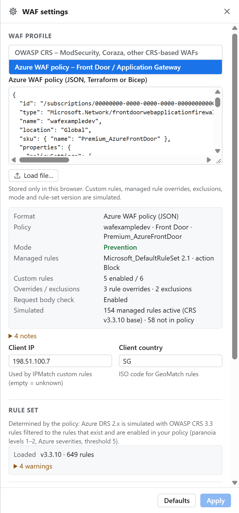
| Simulated | How |
|---|---|
| Custom rules | Priority order; Allow / Block / Redirect stop evaluation, Log continues; all conditions AND, values OR; transforms; negation; size operators compare byte length; IPMatch / GeoMatch via the client IP / country setting. |
| Managed rules (DRS) | Only rules that exist in your DRS version (2.2, 2.1, 2.0, 1.x) and are enabled in the policy; Azure's severities; anomaly threshold 5; rule-set action (Block / Log / Redirect). |
| Rule overrides | Disabled rules are removed; rule action Log reports the rule without adding to the score; Block / Redirect block immediately; Allow stops evaluation. |
| Exclusions | Header / cookie / query / post / JSON argument exclusions at policy, rule-set, group and rule level (Equals, StartsWith, EndsWith, Contains, EqualsAny). |
| Mode | Detection → “logged only”; disabled policy → nothing inspected. |
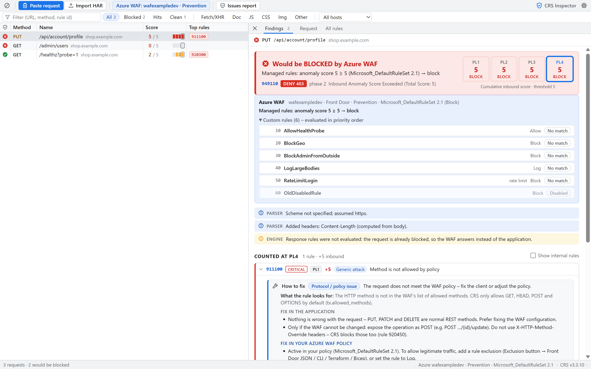
Not simulated: Microsoft Threat Intelligence rules (rule ids 99xxxxxx – not public), the Bot Manager rule set (IP reputation), rate limits (a single request cannot exceed a rate), ASN / client-fingerprint / service-tag conditions. DRS rules are approximated with the equivalent OWASP CRS 3.3 rules they are based on – Microsoft may have tuned individual signatures. The policy JSON is stored only in your browser.
Useful for requests from colleagues, tickets or other browsers, or to test a modified request.
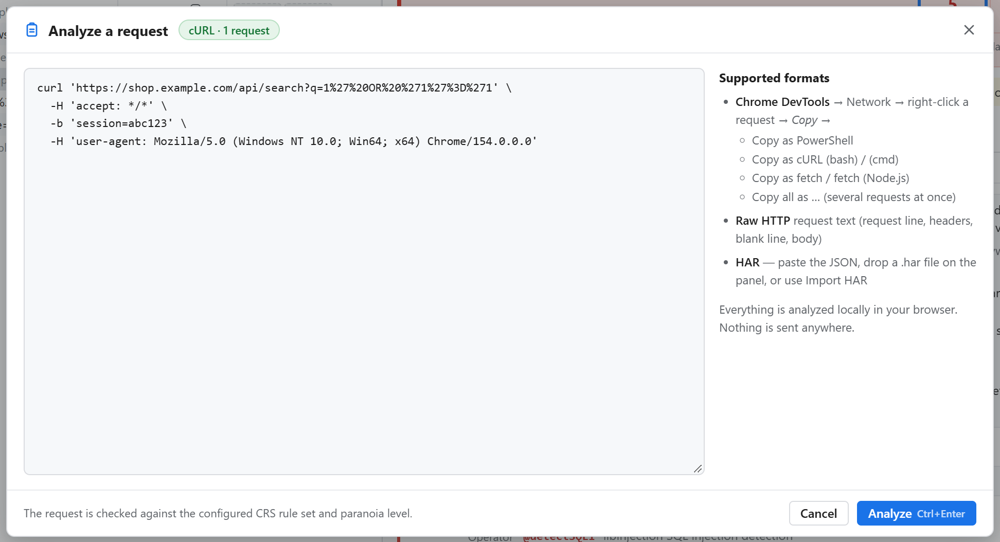
| Format | Notes |
|---|---|
| PowerShell | Recommended. HTTP/2 pseudo-headers (authority, method, path, scheme) are recognised; cookies from $session.Cookies are included. |
| cURL (bash / cmd) | Includes cookies (-b). Note: cURL copies omit the browser's Accept-Encoding. |
| fetch / fetch (Node.js) | Browser fetch copies contain no cookies and no User-Agent – may cause extra PL2 hits (920320 “missing User-Agent”). |
| Raw HTTP | POST /path HTTP/1.1, headers, blank line, body. Separate several requests with a line ###. |
| HAR | Import HAR or drop a .har file (Network tab → ⤓ Export HAR). |
Sensitive data. Copied requests contain session cookies and tokens. The extension keeps them in memory only and never sends them anywhere – but take care where else you paste them.
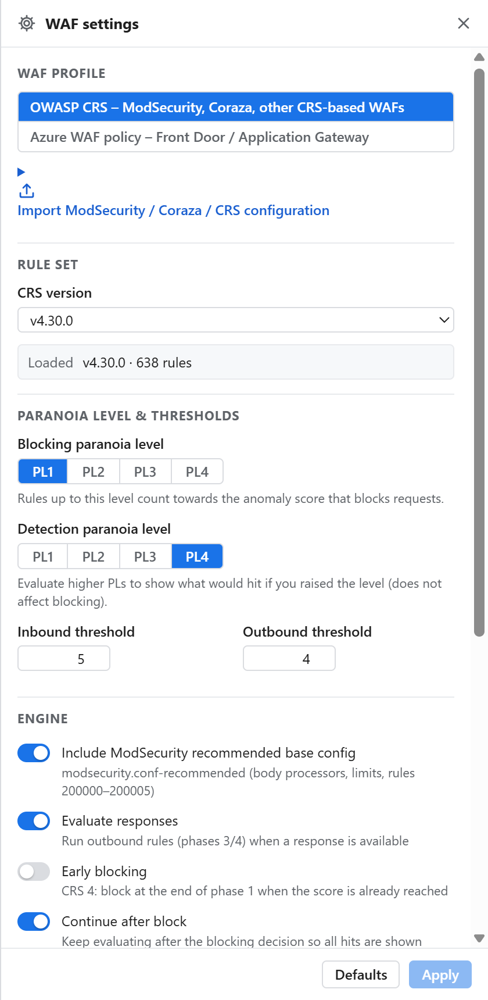
| Setting | Meaning |
|---|---|
| CRS version | v4.30.0 (latest), v4.25.2 (LTS), v3.3.10 (closest to many managed WAFs based on CRS 3.x). |
| Blocking paranoia level | Same as the toolbar PL buttons: rules up to this level count. |
| Detection paranoia level | Rules up to this level are evaluated and shown, without affecting the verdict. Keep at PL4. |
| Inbound / outbound threshold | Score at which requests / responses are blocked (CRS defaults 5 / 4). |
| ModSecurity base config | JSON/XML body parsing, 128 KB body limit, invalid body → 400. Keep on. |
| Evaluate responses | Also checks HTML/text responses for data leakage (stack traces, SQL errors). |
| Early blocking | CRS 4 option: block already after the request headers. |
| Continue after block | Keep evaluating after the blocking decision so all hits are listed. |
| HTTP version | Simulate the protocol the WAF sees (e.g. HTTP/1.1 behind a CDN). |
| Custom rules before / after CRS | Your WAF's own configuration: e.g. tx.allowed_methods (CRS blocks PUT/PATCH/DELETE by default!), exclusions. |
Example – allow REST methods like the WAF does:SecAction "id:900200,phase:1,pass,nolog,setvar:'tx.allowed_methods=GET HEAD POST OPTIONS PUT PATCH DELETE'"
| Question | Answer |
|---|---|
| The OWASP CRS tab is missing. | Check the extension is enabled on chrome://extensions, then close and reopen DevTools. Look behind the » overflow in the tab bar. |
| The list stays empty. | Reload the page with DevTools open; check the record button is red. Requests made before DevTools was opened are not captured. |
| Images and scripts are listed too. | Yes – the WAF inspects every request (cookies and query strings of images can trigger rules). Use the type filters (Fetch/XHR, Doc …) to focus. |
| Our WAF did not block a request the extension marks as blocked (or vice versa). | See section 10: Detection mode, Front Door tier, policy association, disabled rules and DRS differences. Rule ids and the Log data line help to match WAF logs. |
| DELETE / PUT / PATCH are blocked (911100). | CRS only allows GET, HEAD, POST, OPTIONS by default. Most API deployments extend tx.allowed_methods – add the setting shown in section 13. On Azure, see sections 10–11. |
| Large uploads / bodies are blocked (ENGINE 413). | ModSecurity rejects bodies above 128 KB (without files) by default. Your WAF may use a different limit. |
| “Rule 955100: data file not available”. | Windows Defender removed a CRS signature file for web-shell detection in responses. Only that response rule is affected; request analysis is complete. |
| Is any data sent to a server? | No. Rules and analysis run entirely inside the extension. |
| CRS | OWASP Core Rule Set – the generic attack-detection rules used by ModSecurity, Coraza and many cloud WAFs. |
| Anomaly score | Points accumulated by matching rules; compared with the threshold at the end of the request. |
| Paranoia level (PL) | How strict CRS is (1–4). Higher = more rules, more false positives. |
| False positive | A legitimate request that triggers a rule. |
| Exclusion | WAF configuration that stops a rule from inspecting a specific variable or endpoint. |
| ARGS / REQUEST_COOKIES / REQUEST_HEADERS | ModSecurity names for query/body parameters (JSON fields as json.field), cookies and headers. |